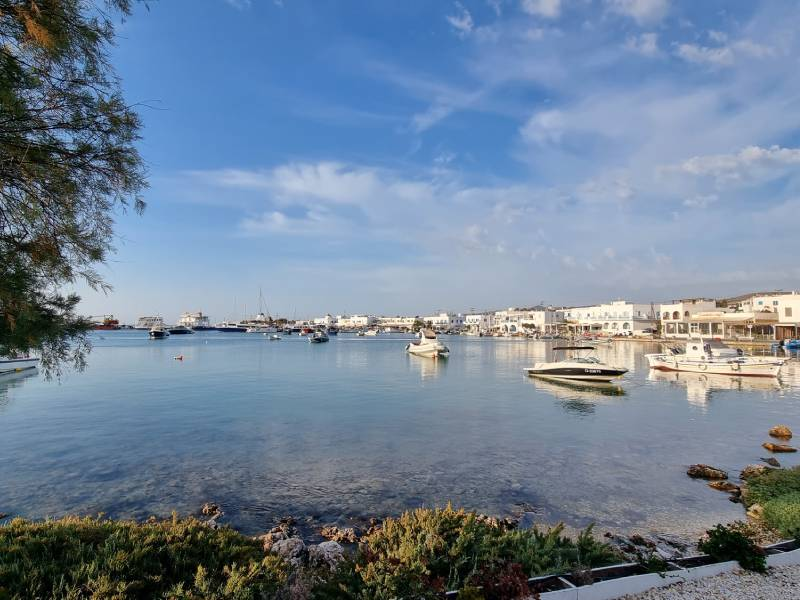

Antiparos är en ö som ligger i Kykladerna i Grekland. Den har runt 1200 invånare och mycket turister på somrarna. Antiparos är en väldigt idyllisk plats som mest består av människor som ägnar sig åt jordbruk och fiske. Tom Hanks och Madonna äger t.om mark/sommarhus på ön, vilket har gjort ön till ett väldigt populärt resemål.
Framme!